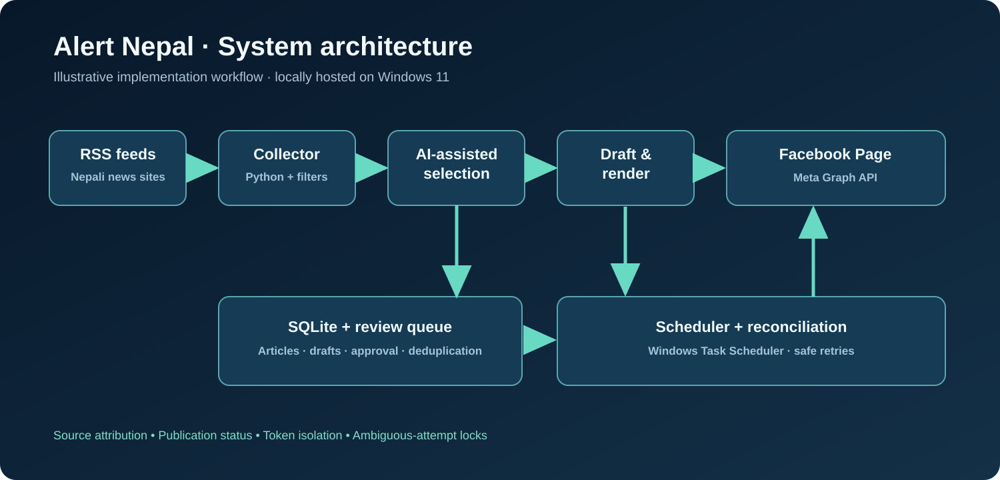
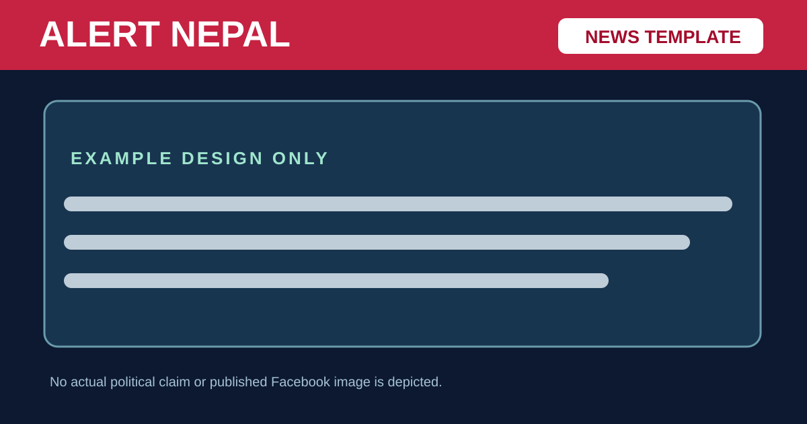

Project overview
I built Alert Nepal to automate repetitive steps in Nepali political news publishing. The agent reads from selected RSS feeds, filters for relevant stories, uses AI-assisted content preparation, creates news cards, and manages a publishing queue with database-backed safeguards.
How it works

- News collection: Read Onlinekhabar and Setopati RSS feeds and select relevant political news.
- AI assistance: Use Gemini API to help rank news and draft Nepali-language content, with a focus option for stories mentioning Balen Shah or Nepal's prime minister.
- State management: Track articles, drafts, approval queues and publication status in SQLite.
- Local review: Use a Streamlit-based interface to view prepared items and publication states.
- Facebook integration: Publish through the Meta Graph API and record successful or uncertain results.
- Automation: Run scheduled checks using Windows Task Scheduler, with reconciliation to avoid unintended duplicate posts.
Illustrative card design

Outcome & lessons
The project successfully connected to the Facebook Page and published approved content in live testing. It demonstrates API integration, workflow state management, image-card production and practical automation. Reliable unattended scheduling remains an area of ongoing refinement.
Documentation & evidence
Read the full project README ↗, architecture notes ↗ and operations notes ↗.
The working code is maintained on a local Windows computer and is not published in this portfolio. Live credentials, private records and news images from third-party sources are intentionally not included.